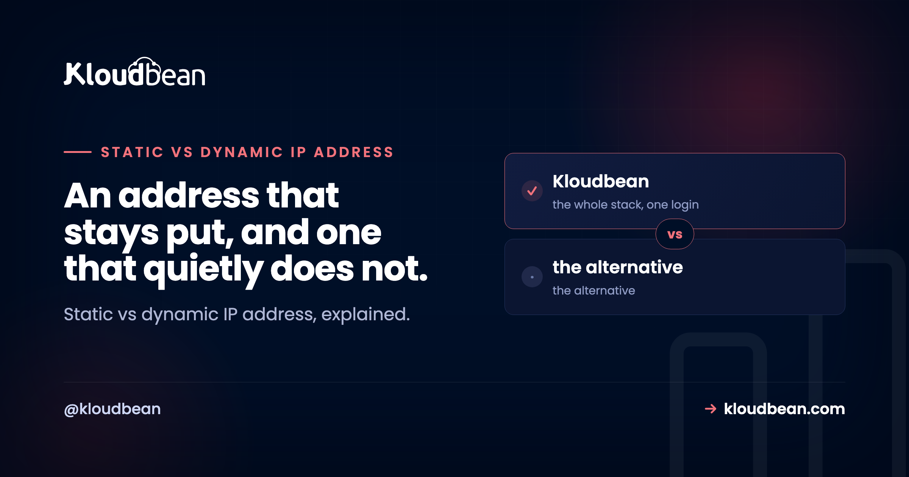

Static vs Dynamic IP Address: Which One Do You Actually Need?

Your home internet probably has a different public IP address today than it did last month, and you never noticed or cared. A server cannot get away with that. The whole static vs dynamic IP address question comes down to one plain thing: does the address need to stay put, or is it fine for it to change? This guide covers how addresses get handed out, the concrete cases where a fixed one matters, and how to decide if you need a static IP.
A static IP address stays the same for the life of the device or server. A dynamic IP is handed out temporarily by DHCP and can change when the lease renews. Home connections are dynamic because it is cheaper and simpler. Servers want a static IP so DNS records, firewalls, and mail keep working.
Static vs dynamic IP address: what is the actual difference?
An IP address is just the number that identifies your device on a network, the way a street address identifies a building. The difference between static and dynamic IP is about how long that number sticks around.
A static IP is fixed. It gets assigned once and stays the same until someone changes it on purpose. A dynamic IP is temporary. Your network hands it out on loan, and it can be swapped for a different one later. That is the whole dynamic IP meaning in one line: an address you hold for a while, not one you own.
Neither is better in the abstract. They solve different problems. Here is the shape of it before we get into why.
| Aspect | Dynamic IP | Static IP |
|---|---|---|
| How it is assigned | Leased automatically by DHCP | Fixed, set once and kept |
| Does it change | Can change when the lease renews | Stays the same |
| Who usually gets it | Home and mobile connections | Servers, mail, VPN endpoints |
| Setup effort | None, it just works | A little config, sometimes a fee |
| Good for | Browsing, streaming, everyday devices | Anything the outside world reaches by address |
Most people reading this already have a dynamic IP at home and have never had a reason to think about it. The real question is whether something you want to run needs the fixed kind.
How does a device get an IP address in the first place?
Almost every network you join runs DHCP, the Dynamic Host Configuration Protocol. When your laptop or phone connects, it basically asks "anyone got an address for me?" and a DHCP server loans it one for a set period called a lease.
While the lease is valid, the address is yours. When it is close to expiring, your device asks to renew. Often it gets the same address back, so things feel stable for a while. But not always. If the device was off for a stretch, or the network is busy, or the ISP reshuffles its pool, you can come back to a different address. That is the dynamic part, and it happens quietly in the background.
A static assignment skips the lottery. Instead of asking DHCP each time, the address is pinned: either configured directly on the machine, or reserved for it so the DHCP server always hands back the same one. It does not drift.
So why is home internet dynamic by default? Money and simplicity, mostly. An ISP has a big pool of public addresses and a lot of customers, and not everyone is online at the same moment. Loaning addresses out dynamically lets them share a smaller pool, and it means zero setup for the customer. Servers have the opposite priority, which is where we are headed.
Public vs private IP: two labels people mix up
Before going further, clear up a confusion that trips people constantly. Static versus dynamic is one distinction. Public versus private is a completely different one, and they stack.
A private IP lives inside your local network. Your router hands these out from reserved ranges like 192.168.x.x or 10.x.x.x, and they are not reachable from the public internet. Your laptop, your printer, and your phone each have one so they can talk on the LAN. Private ranges get more attention in what a VPC is, where keeping a database on a private address is the entire point.
A public IP is the single address the outside world sees for your network, assigned by your ISP or, for a server, by your cloud provider. When a website loads your page, it is talking to a public IP.
Here is the catch: each of those can be static or dynamic on its own. Your laptop's private address might shuffle around your home network while your router's public address is the one that actually faces the internet. When someone says "my IP changed and broke my site," they nearly always mean the public one.
When do you actually need a static IP?
Here is the useful test. You need a static IP whenever something outside your machine has written down your address and expects it to keep working. If nothing points back at you, a dynamic IP is fine. Walk through the real cases:
- Hosting a server that a DNS A record points to. DNS turns a name like
example.cominto an IP. That mapping, the A record, has to point at an address that stays put. DNS explained goes deeper, but the short version is that the A record and the server's IP have to agree, and they cannot if the IP keeps moving. - IP allowlisting into a firewall or database. A common security move is "only let this one address connect." The moment your address changes, you have locked yourself out, and your old address may get handed to a stranger.
- Running a mail server. Mail is the strictest. Receiving servers check the sending IP and its reverse DNS (a PTR record) before they trust your mail. Both need a stable IP to line up, which is why you basically cannot run reputable mail on a dynamic address.
- Site-to-site and VPN links. When two offices or a VPN endpoint connect, each side is configured with the other's fixed address. A moving target does not work.
A table makes the call quick:
| Use case | Static or dynamic? | Why |
|---|---|---|
| Browsing, streaming, gaming at home | Dynamic is fine | Nothing outside points back at your address |
| Hosting a website a DNS A record points to | Static | The A record must keep pointing at a live address |
| Allowlisting your IP into a firewall or database | Static | An allowlist entry breaks the moment the IP changes |
| Running a mail server | Static, plus a matching PTR record | Receivers check the IP and its reverse DNS before trusting mail |
| Site-to-site or VPN links | Static | Both ends configure each other by fixed address |
| Remote access (SSH or RDP) to one box | Static helps | You connect to a known address every time |
Concretely, the two most common places a fixed IP shows up look like this. A DNS A record naming the address:
; DNS zone: point the name at the server's fixed IP
example.com. A 203.0.113.10
www.example.com. A 203.0.113.10And a firewall rule that only trusts that one address:
# Only this address may reach the database port
ufw allow from 203.0.113.10 to any port 5432The failure mode: my service broke because the IP changed
This is the pain that sends most people looking up static IPs in the first place, so it is worth naming clearly.
You point your domain's A record at your home connection. It works great for a week. Then your ISP quietly renews your lease and hands you a new public IP. Your A record still names the old one. Now your domain points at an address that is no longer yours, and your site is unreachable. Worse, that old address gets recycled to another customer, so visitors may land on a stranger's router.
Same story with allowlists. You add your office IP to a database firewall, everything is fine, then the address rotates overnight and every connection is refused in the morning. The database did exactly what you told it to. The address just moved out from under it.
There is a workaround for the DNS case called Dynamic DNS: a small client watches your address and updates the DNS record whenever it changes. It is fine for a home lab or a personal project. It is not a real fix for anything serious, and it does nothing for mail, where the IP reputation and the PTR record still need to be stable. If a thing matters, give it a fixed address instead of chasing a moving one.
IPv4 is running out, so how do servers keep a stable address?
There is a reason addresses get recycled at all, and it is scarcity. The original addressing scheme, IPv4, uses 32-bit numbers, which works out to roughly 4.3 billion possible addresses. That sounded like plenty in the 1980s. It is not enough for a planet full of phones, laptops, servers, and smart doorbells, so IPv4 addresses are a genuinely limited resource that providers manage carefully.
That scarcity is exactly why your ISP loans addresses dynamically. Recycling a pool among customers who are not all online at once stretches a limited supply. IPv6, the newer scheme, has an address space so large the scarcity mostly disappears, and it is slowly taking over, but most public services are still reached over IPv4 today.
Servers sidestep the whole problem. When you provision a server with a cloud provider, it gets a public IP that belongs to that server for as long as it exists. You did not have to negotiate with an ISP or hope the lease holds. That fixed public address is what makes a cloud server the clean way to get a static IP for a server: you point your DNS at it, add it to your allowlists, and it stays where you left it. Managed hosting bundles the server and that stable address together, which what a managed server is breaks down further.
So, do you need a static IP?
Boil it down. If you use the internet the way most people do, browsing, streaming, gaming, working, a dynamic IP is completely fine and you will never think about it. There is no benefit to paying for a static address you are not pointing anything at.
You want a fixed public IP when you host something the outside world reaches by address: a website behind a DNS A record, a mail server, a VPN or site-to-site link, or any service sitting behind an IP allowlist. In those cases a changing address is not a quirk, it is an outage waiting to happen.
The cleanest way to get one is not to fight your home ISP for a static IP. It is to put the thing that needs a fixed address on a server that comes with one. Pointing a domain at that address, with a certificate on top, is covered in custom domain and SSL for your app, and how the encryption behind it works is in SSL and TLS explained.
A rehoming, not a rewrite.
Standard code moves onto a standard Linux server, so this is a migration rather than a rewrite. Pick from seven clouds, keep push-to-deploy, and get help moving the first workload across.
- ✓ Free migration assistance
- ✓ Free trial
- ✓ Seven cloud providers
- ✓ Flat monthly price
- ✓ Managed databases
- ✓ Git deploy
FAQ
What is the difference between a static and a dynamic IP address?
A static IP address is fixed: it is assigned once and stays the same until someone deliberately changes it. A dynamic IP is temporary, handed out by DHCP for a limited lease and able to change when that lease renews. Static suits servers and anything reached by address; dynamic suits everyday home and mobile connections.
What does dynamic IP mean?
A dynamic IP means your address is loaned to you rather than owned. When your device joins a network, a DHCP server assigns an address for a set lease period. You keep it while the lease is valid, but you can be given a different one later, which is why it is called dynamic.
Do I need a static IP address?
Only if something outside your machine relies on your address staying the same. Hosting a website behind a DNS record, running a mail server, using IP allowlists, or connecting VPN endpoints all need a fixed IP. For normal browsing, streaming, and gaming, a dynamic IP is perfectly fine.
Why do home internet connections use dynamic IPs?
Mostly cost and simplicity. An ISP has more customers than it has public addresses in use at any one moment, so it loans addresses from a shared pool with DHCP. That stretches a limited supply of IPv4 addresses and means the customer has nothing to configure.
When can a dynamic IP address change?
When the DHCP lease renews and the server hands back a different address. That can happen after your device or router is offline for a while, after a reboot, when the ISP reshuffles its pool, or simply when the lease expires. Often you get the same address back, but there is no promise of it.
What is the difference between a public and a private IP?
A private IP lives inside your local network on ranges like 192.168.x.x or 10.x.x.x and is not reachable from the internet. A public IP is the single address the outside world sees for your network. They are separate from static versus dynamic, and each can be either static or dynamic.
Do I need a static IP to host a website?
The server that hosts the site needs a stable public IP, because your domain name points at that address through a DNS A record. If the address changed, the record would point at nothing. The easy path is a cloud server that comes with a fixed public IP, rather than hosting from a dynamic home connection.
Does a mail server need a static IP and a PTR record?
Yes. Receiving mail servers check the sending IP and its reverse DNS, the PTR record, before trusting a message. Both must be stable and must match, so a dynamic address is a non-starter for reputable mail. This is one of the strictest cases for needing a fixed IP.
How does a cloud server get a stable public IP?
When you provision a server with a cloud provider, it is assigned a public IP that stays with that server for its lifetime. You do not lease it from an ISP, so it does not rotate underneath you. That fixed address is what you point DNS at and add to allowlists.